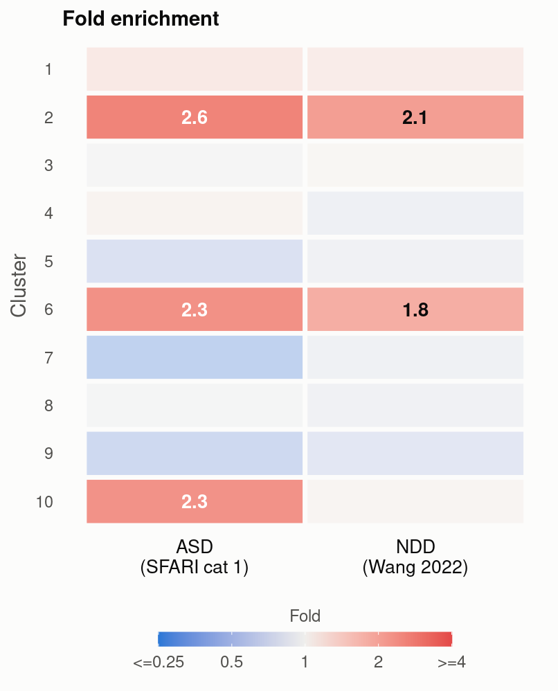
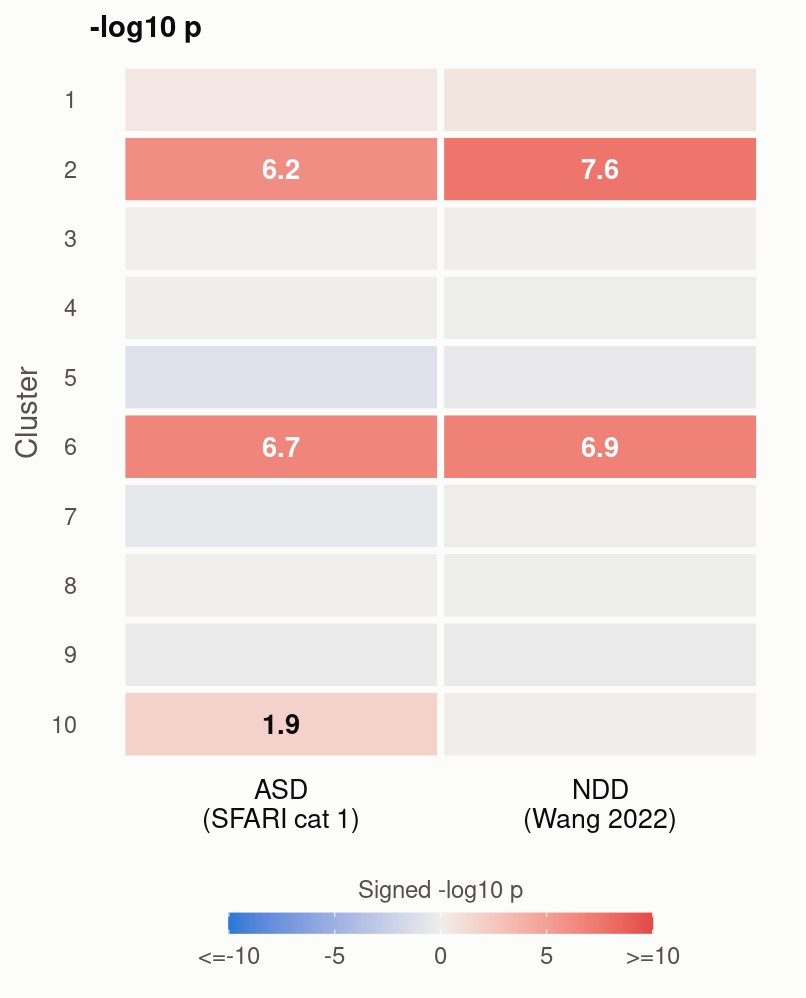

Last updated: 2026-11-20
Checks: 6 1
Knit directory: GLI-Hedgehog_Signaling/
This reproducible R Markdown analysis was created with workflowr (version 1.7.1). The Checks tab describes the reproducibility checks that were applied when the results were created. The Past versions tab lists the development history.
The R Markdown file has unstaged changes. To know which version of
the R Markdown file created these results, you’ll want to first commit
it to the Git repo. If you’re still working on the analysis, you can
ignore this warning. When you’re finished, you can run
wflow_publish to commit the R Markdown file and build the
HTML.
Great job! The global environment was empty. Objects defined in the global environment can affect the analysis in your R Markdown file in unknown ways. For reproduciblity it’s best to always run the code in an empty environment.
The command set.seed(20261117) was run prior to running
the code in the R Markdown file. Setting a seed ensures that any results
that rely on randomness, e.g. subsampling or permutations, are
reproducible.
Great job! Recording the operating system, R version, and package versions is critical for reproducibility.
Nice! There were no cached chunks for this analysis, so you can be confident that you successfully produced the results during this run.
Great job! Using relative paths to the files within your workflowr project makes it easier to run your code on other machines.
Great! You are using Git for version control. Tracking code development and connecting the code version to the results is critical for reproducibility.
The results in this page were generated with repository version 89e7d9f. See the Past versions tab to see a history of the changes made to the R Markdown and HTML files.
Note that you need to be careful to ensure that all relevant files for
the analysis have been committed to Git prior to generating the results
(you can use wflow_publish or
wflow_git_commit). workflowr only checks the R Markdown
file, but you know if there are other scripts or data files that it
depends on. Below is the status of the Git repository when the results
were generated:
Unstaged changes:
Modified: analysis/asd_ndd_enrichment.Rmd
Note that any generated files, e.g. HTML, png, CSS, etc., are not included in this status report because it is ok for generated content to have uncommitted changes.
These are the previous versions of the repository in which changes were
made to the R Markdown (analysis/asd_ndd_enrichment.Rmd)
and HTML (docs/asd_ndd_enrichment.html) files. If you’ve
configured a remote Git repository (see ?wflow_git_remote),
click on the hyperlinks in the table below to view the files as they
were in that past version.
| File | Version | Author | Date | Message |
|---|---|---|---|---|
| Rmd | 89e7d9f | XSun | 2026-11-20 | update |
| html | 89e7d9f | XSun | 2026-11-20 | update |
| Rmd | eb41380 | XSun | 2026-11-20 | update |
| html | eb41380 | XSun | 2026-11-20 | update |
knitr::opts_chunk$set(echo = TRUE, warning = FALSE, message = FALSE)
suppressMessages(library(ggplot2))
P <- "/project/xinhe/xsun/GLI-Hedgehog_Signaling"
r <- read.delim(file.path(P, "results/1.geneset_enrichment/enrichment_fisher.tsv"), check.names = FALSE)
gs <- read.delim(file.path(P, "data/gene_sets/enrichment_gene_sets.tsv"), check.names = FALSE)
bg <- read.delim(file.path(P, "data/gene_sets/background_protein_coding_hgnc.tsv"))
cl <- read.delim(file.path(P, "data/gene_clusters/maSigPro_clusters_hgnc.tsv"))
sf <- read.delim(file.path(P, "data/gene_sets/SFARI_cat1_cat2_07-12-2026release.tsv"))
nd <- read.delim(file.path(P, "data/gene_sets/NDD_genes.tsv"))
# the two gene sets used on this page
sets <- c(ASD = "SFARI_cat1", NDD = "NDD_wang2022")
lab <- c(ASD = "ASD (SFARI category 1)", NDD = "NDD (Wang et al. 2022)")
d <- r[r$cluster != "all" & r$gene_set %in% sets, ]
d$set <- names(sets)[match(d$gene_set, sets)]
d$k <- as.integer(d$cluster)
d <- d[order(d$set, d$k), ]
sig <- d[d$p_value < 0.05, ]
f2 <- function(x) sprintf("%.1f", x)
pv <- function(p) ifelse(p >= 0.001, sprintf("%.3f", p), formatC(p, format = "e", digits = 1))
fmt <- function(x) format(x, big.mark = ",", trim = TRUE)
get1 <- function(s, k, v) d[d$set == s & d$k == k, v]
# one-line description of a result: "44 genes vs 19.2 expected (2.3x, p = 2.2e-07)"
desc <- function(s, k) paste0(get1(s, k, "overlap"), ifelse(get1(s, k, "overlap") == 1, " gene", " genes"),
" vs ", f2(get1(s, k, "expected")),
" expected (", f2(get1(s, k, "fold")), "x, p = ", pv(get1(s, k, "p_value")), ")")
ids <- function(s) gs$hgnc_id[gs$gene_set == sets[[s]]]
n_set <- function(s) length(ids(s))
shared <- length(intersect(ids("ASD"), ids("NDD")))
w <- nd[nd$source == "Wang2022", ]
n_clust <- function(k) sum(cl$kept & cl$cluster == k)
# chart ink and diverging colours (blue = depleted, gray = as expected, red = enriched)
INK <- "#0b0b0b"; INK2 <- "#52514e"; MUTED <- "#898781"
SURF <- "#fcfcfb"; BLUE <- "#2a78d6"; RED <- "#e34948"; MID <- "#f0efec"GLI transcription factors mediate Hedgehog signaling, which shapes how neuronal progenitors differentiate. In this experiment, GLI is overexpressed and then perturbed or removed, and gene expression is measured over a time course. Genes that respond were grouped into 10 clusters by their expression pattern over time (maSigPro).
All gene names were updated to current HGNC symbols, using previous symbols and aliases for outdated names. Only protein-coding genes are kept, to match the background; most dropped genes are lncRNAs, antisense transcripts or pseudogenes.
k <- sort(unique(cl$cluster))
tab <- data.frame(cluster = k, genes_in_file = as.vector(table(cl$cluster)),
kept = as.vector(table(factor(cl$cluster[cl$kept], k))))
tab <- rbind(tab, data.frame(cluster = "total", genes_in_file = sum(tab$genes_in_file), kept = sum(tab$kept)))
knitr::kable(tab, col.names = c("Cluster", "Genes in file", "Protein-coding genes used"),
format.args = list(big.mark = ","))| Cluster | Genes in file | Protein-coding genes used |
|---|---|---|
| 1 | 560 | 503 |
| 2 | 1,090 | 1,030 |
| 3 | 900 | 852 |
| 4 | 388 | 357 |
| 5 | 998 | 965 |
| 6 | 1,626 | 1,539 |
| 7 | 290 | 273 |
| 8 | 361 | 347 |
| 9 | 236 | 213 |
| 10 | 387 | 354 |
| total | 6,836 | 6,433 |
| Gene set | Source | Genes used |
|---|---|---|
| ASD | SFARI Gene, category 1, release 07-12-2026 | 242 |
| NDD | Wang et al. 2022, PNAS, all 615 candidate genes | 614 |
ASD: SFARI Gene category 1. SFARI Gene is an expert-curated database of autism genes, scored by strength of evidence. Category 1 (“high confidence”) genes have been clearly implicated in autism, typically by at least three de novo likely gene-disrupting mutations reported in the literature. The 07-12-2026 release has 245 category 1 genes (121 also flagged as syndromic); 242 are protein-coding and used here. The three dropped genes are small nuclear RNA genes (RNU2-2, RNU4-2, RNU5B-1).
NDD: Wang et al. 2022. Integrated gene analyses of de novo variants from 46,612 trios with autism and developmental disorders (PNAS 119:e2203491119).
Overlap. The two sets share 140 genes: 102 genes are ASD-only and 474 are NDD-only. Results for the two sets are therefore related, not independent.
For each cluster and gene set, a two-sided Fisher’s exact test compares the cluster with the rest of the background:
| in gene set | not in gene set | |
|---|---|---|
| in cluster k | a | b |
| rest of background | c | d |
Left: fold enrichment (observed / expected). Right: −log10 p, signed by direction. Red = enriched, blue = depleted. Numbers are shown where p < 0.05; on the left, cells with p ≥ 0.05 are faded.
h <- d
h$set_lab <- factor(ifelse(h$set == "ASD", "ASD\n(SFARI cat 1)", "NDD\n(Wang 2022)"),
c("ASD\n(SFARI cat 1)", "NDD\n(Wang 2022)"))
h$cluster_f <- factor(h$k, 10:1) # cluster 1 on top
h$sigp <- h$p_value < 0.05
h$l2 <- pmax(pmin(log2(h$fold), 2), -2) # fold, log2, capped at 0.25-4
h$slp <- sign(log(h$odds_ratio + 1e-12)) * -log10(h$p_value) # signed -log10 p
h$slp_c <- pmax(pmin(h$slp, 10), -10)
th <- theme_minimal(base_size = 11) +
theme(panel.grid = element_blank(), plot.background = element_rect(fill = SURF, colour = NA),
plot.title = element_text(colour = INK, face = "bold", size = 11),
axis.text = element_text(colour = INK2), axis.text.x = element_text(colour = INK, size = 10),
axis.title = element_text(colour = INK2),
legend.position = "bottom", legend.title = element_text(colour = INK2, size = 9),
legend.text = element_text(colour = INK2, size = 9),
legend.key.width = unit(32, "pt"), legend.key.height = unit(8, "pt"))
bar <- guides(fill = guide_colourbar(title.position = "top", title.hjust = 0.5))
tile <- function(fill_var, lab_txt, white_if, alpha_var = NULL) {
list(geom_tile(aes(fill = .data[[fill_var]], alpha = if (is.null(alpha_var)) 1 else .data[[alpha_var]]),
colour = SURF, linewidth = 1.2),
scale_alpha_identity(),
geom_text(aes(label = ifelse(sigp, lab_txt, ""),
colour = ifelse(white_if, "#ffffff", INK)), size = 3.6, fontface = "bold"),
scale_colour_identity())
}
h$a_fold <- ifelse(h$sigp, 1, 0.35)
ggplot(h, aes(set_lab, cluster_f)) +
tile("l2", f2(h$fold), abs(h$l2) > 1.1, "a_fold") +
scale_fill_gradient2(low = BLUE, mid = MID, high = RED, midpoint = 0, limits = c(-2, 2),
breaks = log2(c(0.25, 0.5, 1, 2, 4)), labels = c("<=0.25", "0.5", "1", "2", ">=4"),
name = "Fold") +
labs(title = "Fold enrichment", x = NULL, y = "Cluster") + th + bar
ggplot(h, aes(set_lab, cluster_f)) +
tile("slp_c", f2(-log10(h$p_value)), abs(h$slp_c) > 5.5) +
scale_fill_gradient2(low = BLUE, mid = MID, high = RED, midpoint = 0, limits = c(-10, 10),
breaks = c(-10, -5, 0, 5, 10), labels = c("<=-10", "-5", "0", "5", ">=10"),
name = "Signed -log10 p") +
labs(title = "-log10 p", x = NULL, y = "Cluster") + th + bar
| Version | Author | Date |
|---|---|---|
| 89e7d9f | XSun | 2026-11-20 |

| Version | Author | Date |
|---|---|---|
| 89e7d9f | XSun | 2026-11-20 |
a <- d[d$set == "ASD", ]; n <- d[d$set == "NDD", ]
bold <- function(x, p) ifelse(p < 0.05, paste0("**", x, "**"), x)
tab <- data.frame(
cluster = a$k, genes = fmt(a$n_cluster),
a_obs = paste0(a$overlap, " / ", f2(a$expected)), a_fold = bold(sprintf("%.2f", a$fold), a$p_value),
a_p = bold(pv(a$p_value), a$p_value),
n_obs = paste0(n$overlap, " / ", f2(n$expected)), n_fold = bold(sprintf("%.2f", n$fold), n$p_value),
n_p = bold(pv(n$p_value), n$p_value))
knitr::kable(tab, format = "pipe", align = "rrrrrrrr",
col.names = c("Cluster", "Genes", "ASD: observed / expected", "ASD: fold", "ASD: p",
"NDD: observed / expected", "NDD: fold", "NDD: p"),
caption = "Bold: p < 0.05.")| Cluster | Genes | ASD: observed / expected | ASD: fold | ASD: p | NDD: observed / expected | NDD: fold | NDD: p |
|---|---|---|---|---|---|---|---|
| 1 | 503 | 9 / 6.3 | 1.43 | 0.302 | 21 / 15.9 | 1.32 | 0.196 |
| 2 | 1,030 | 33 / 12.9 | 2.56 | 6.6e-07 | 67 / 32.7 | 2.05 | 2.3e-08 |
| 3 | 852 | 10 / 10.7 | 0.94 | 1.000 | 28 / 27.0 | 1.04 | 0.841 |
| 4 | 357 | 5 / 4.5 | 1.12 | 0.807 | 9 / 11.3 | 0.80 | 0.646 |
| 5 | 965 | 6 / 12.1 | 0.50 | 0.074 | 25 / 30.6 | 0.82 | 0.345 |
| 6 | 1,539 | 44 / 19.2 | 2.29 | 2.2e-07 | 87 / 48.8 | 1.78 | 1.2e-07 |
| 7 | 273 | 1 / 3.4 | 0.29 | 0.270 | 7 / 8.7 | 0.81 | 0.727 |
| 8 | 347 | 4 / 4.3 | 0.92 | 1.000 | 9 / 11.0 | 0.82 | 0.644 |
| 9 | 213 | 1 / 2.7 | 0.38 | 0.529 | 4 / 6.8 | 0.59 | 0.427 |
| 10 | 354 | 10 / 4.4 | 2.26 | 0.014 | 12 / 11.2 | 1.07 | 0.759 |
Cluster 6 (1,539 genes, the largest cluster)
Cluster 2 (1,030 genes)
Cluster 10 (354 genes)
Other clusters
The gene-type patterns above come from reading the gene lists; they are descriptive, not a formal test.
g <- sig[order(sig$k, sig$set), ]
knitr::kable(data.frame(g$k, lab[g$set], g$overlap, gsub(",", ", ", g$overlap_genes)),
col.names = c("Cluster", "Gene set", "Genes", "Overlapping genes"), row.names = FALSE)| Cluster | Gene set | Genes | Overlapping genes |
|---|---|---|---|
| 2 | ASD (SFARI category 1) | 33 | ADNP, AFF2, ARF3, ARID1B, ATRX, CHAMP1, CHD7, CREBBP, CTCF, DYNC1H1, EHMT1, EP300, GABRB2, GIGYF2, KDM2B, KDM3B, KMT2A, MYCBP2, NIPBL, PPP2R5D, PPP5C, PRR12, PRR14L, RALGAPB, SCN8A, SETD2, SIN3A, SMARCA4, SON, SRCAP, TSC1, TSC2, UPF3B |
| 2 | NDD (Wang et al. 2022) | 67 | ADNP, AFF3, ANKRD17, ANKRD40, ARF3, ARID1A, ARID1B, ARID2, BRPF1, CBX5, CCDC7, CENPU, CGGBP1, CHAMP1, CHD4, CHD7, CREBBP, CSE1L, CTCF, CTR9, CXXC1, DYNC1H1, EHMT1, EP300, EZH2, FBXO28, GABRB2, GLI3, HNRNPD, KDM3B, KMT2A, KMT2B, LEO1, MCM6, MSH6, NIPBL, NSD2, PCGF2, PDCD5, PIK3R2, PPIP5K2, PPP2R5D, PRDM10, PRPF8, QRICH1, RNF20, RTF1, SCN8A, SETD2, SIN3A, SMARCA4, SMARCD1, SMARCE1, SNRNP200, SON, SPEN, SRCAP, STAG1, TNPO3, TNRC6A, TRIM66, TSC1, UBTF, UPF3B, USP7, ZNF107, ZNF215 |
| 6 | ASD (SFARI category 1) | 44 | ANK2, ARHGEF9, ASXL3, BAZ2B, BCL11A, BRSK2, CAMTA2, CELF4, CIC, DLG4, DPYSL2, DSCAM, EBF3, ELAVL3, GABRB3, GRIA2, GRIN2B, IRF2BPL, KCNB1, KCNQ2, KCNQ3, KDM6B, KMT5B, LDB1, LRRC4C, MAP1A, MECP2, MEIS2, MYT1L, NRXN1, NRXN2, PHF2, RELN, RIMS1, RUNX1T1, SATB1, SHANK2, SLC9A6, SPAST, STXBP1, SYN1, TRIO, TSHZ3, ZBTB20 |
| 6 | NDD (Wang et al. 2022) | 87 | ABL1, ACTL6B, AFF4, AGO1, AKT3, AMIGO1, ANK2, AP5M1, ARHGEF9, ASXL3, ATL1, ATP1A3, BCOR, BRSK1, BSDC1, CAMTA1, CDC42BPB, CLCN4, CNKSR2, CTNNA2, DLG4, DPYSL5, EBF3, FBXO11, FBXW7, FREM3, FRMD5, G3BP2, GABRB3, GARNL3, GDI1, GLRA1, GNAO1, GPR173, GRIA2, GRIN2B, H2AC6, IK, INPP5K, JPH3, KCNB1, KCNK3, KCNQ2, KCNQ3, KDM6B, KIF1A, KIF5C, KLF7, KLHL25, KMT5B, LDB1, MAPK8IP3, MARCHF4, MAST1, MECP2, MEIS2, MFN2, MIB1, MMGT1, MN1, MYT1L, NFIB, NKIRAS2, PAFAH1B1, PAK1, PIK3CA, PPM1B, PPP2R2B, PRKAR1B, RGS2, RORA, SATB1, SCN3A, SPAST, STX1B, STXBP1, SYT1, TMEM106B, TNPO2, TRIO, UNC80, VAMP2, WDR26, YWHAG, ZBTB18, ZBTB20, ZMYM2 |
| 10 | ASD (SFARI category 1) | 10 | CHD3, CORO1A, CTNNB1, DDX3X, HNRNPH2, KLHL20, LZTR1, MSL3, PCDH19, SOS2 |
Detailed results for all 7 gene sets (SFARI categories 1 and 2, TADA tiers, NDD) are on the detailed page.
sessionInfo()R version 4.2.0 (2022-04-22)
Platform: x86_64-pc-linux-gnu (64-bit)
Running under: Red Hat Enterprise Linux 8.4 (Ootpa)
Matrix products: default
BLAS/LAPACK: /software/openblas-0.3.13-el8-x86_64/lib/libopenblas_skylakexp-r0.3.13.so
locale:
[1] C
attached base packages:
[1] stats graphics grDevices utils datasets methods base
other attached packages:
[1] ggplot2_3.4.2 workflowr_1.7.1
loaded via a namespace (and not attached):
[1] Rcpp_1.1.1-1.1 bslib_0.3.1 jquerylib_0.1.4 compiler_4.2.0
[5] pillar_1.9.0 later_1.3.0 git2r_0.30.1 tools_4.2.0
[9] getPass_0.2-2 digest_0.6.29 gtable_0.3.0 jsonlite_2.0.0
[13] evaluate_0.15 lifecycle_1.0.4 tibble_3.2.1 pkgconfig_2.0.3
[17] rlang_1.1.2 cli_3.6.2 rstudioapi_0.14 yaml_2.3.5
[21] xfun_0.59 fastmap_1.1.0 withr_2.5.0 dplyr_1.1.2
[25] httr_1.4.8 stringr_1.5.0 knitr_1.51 generics_0.1.3
[29] sass_0.4.1 fs_1.5.2 vctrs_0.6.1 tidyselect_1.2.0
[33] grid_4.2.0 rprojroot_2.0.3 glue_1.6.2 R6_2.5.1
[37] processx_3.5.3 fansi_1.0.3 otel_0.2.0 rmarkdown_2.31
[41] farver_2.1.0 callr_3.7.0 magrittr_2.0.3 whisker_0.4
[45] scales_1.2.0 ps_1.7.0 promises_1.2.0.1 htmltools_0.5.7
[49] colorspace_2.0-3 httpuv_1.6.5 utf8_1.2.2 stringi_1.7.6
[53] munsell_0.5.0